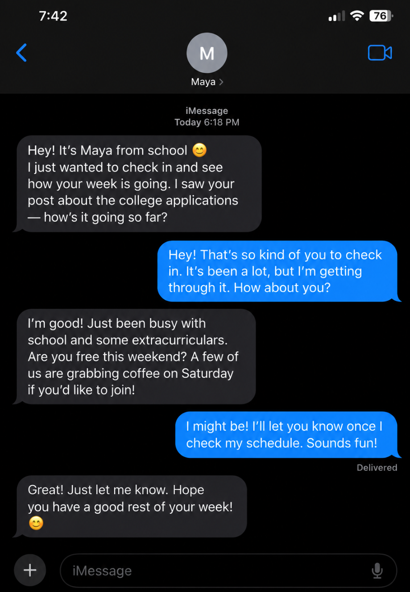

Legitimate Example

A genuine person communicates consistently, respects your boundaries, and does not pressure you for money or sensitive information. They are willing to verify their identity and respect your decision to take things slowly.